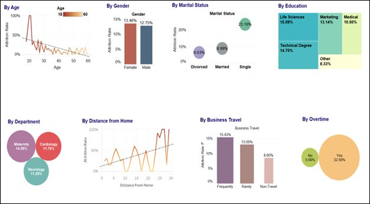
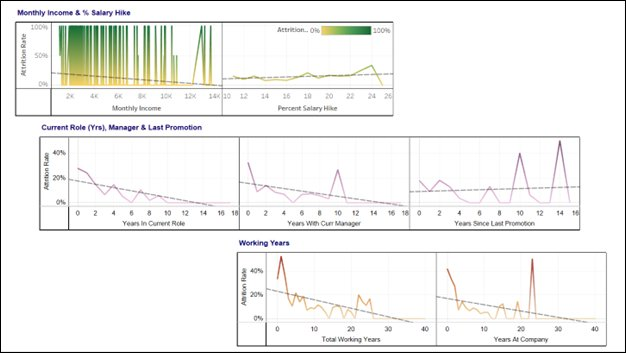
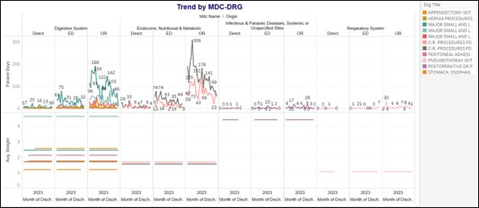

5+ years applying statistical modeling, data visualization, and epidemiologic research methods to improve healthcare delivery and community health outcomes — transforming complex health data into evidence-based decisions that advance health equity.
Transforming healthcare data into actionable insights for public health impact
Specialized in perinatal mental health, maternal-child health outcomes, and community health needs assessments using advanced statistical modeling
Extensive experience in infectious disease surveillance, predictive modeling, and spatial analysis of health disparities across diverse populations
Expertise in hospital resource utilization, length of stay optimization, workforce retention analysis, and quality improvement initiatives
Proven track record building integrated data systems, automated reporting pipelines, and Tableau dashboards that guide organizational decisions
Formal training spanning epidemiology, pharmacy, and business administration
Evidence-based analytics driving improvements in healthcare delivery and public health. Click any card for the full case study.
Interactive dashboards and analytical visualizations created for healthcare and community health projects

Comprehensive demographic analysis dashboard visualizing employee characteristics across age, gender, marital status, education, department, distance from home, business travel, and overtime patterns. This multi-faceted visualization enables stakeholders to identify workforce composition trends and inform HR strategy and retention initiatives.

Advanced regression and trend analysis examining key predictors of nurse attrition including monthly income vs. salary hikes, tenure in current role, years with manager, last promotion timing, total working years, and years at company. These visualizations revealed that years in current role explained 65% of attrition variance (R² = 0.65), informing targeted retention strategies.

Longitudinal trend analysis dashboard tracking patient volumes across Major Diagnostic Categories (MDC) and Diagnosis-Related Groups (DRG) from 2023-2025. Identifies seasonal patterns, peak utilization periods, and resource allocation needs across digestive system, endocrine/nutritional/metabolic disorders, nervous system, and respiratory system categories for Mayo Clinic operational planning.
Driving data-informed decisions across healthcare, public health, and community organizations
Comprehensive expertise in healthcare analytics, epidemiology, and data science
Contributing to academic discourse on maternal health and epidemiology
Open to collaborations in healthcare analytics, epidemiology, and health equity research
Whether it's a research collaboration, a data analytics role, or a question about one of the projects above — feel free to reach out through any of the channels below.